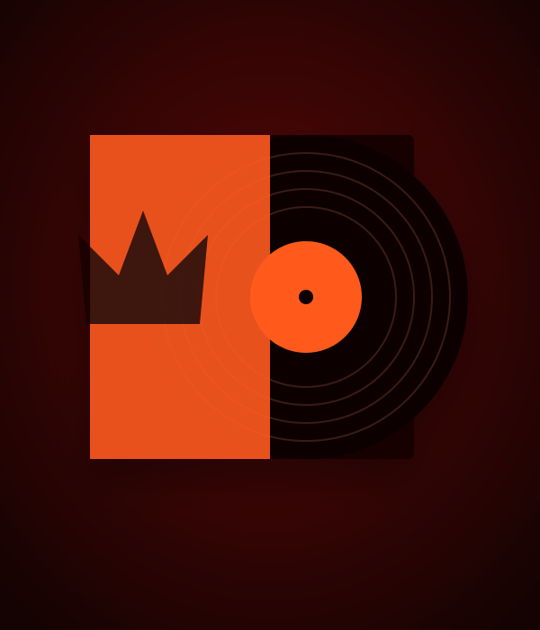
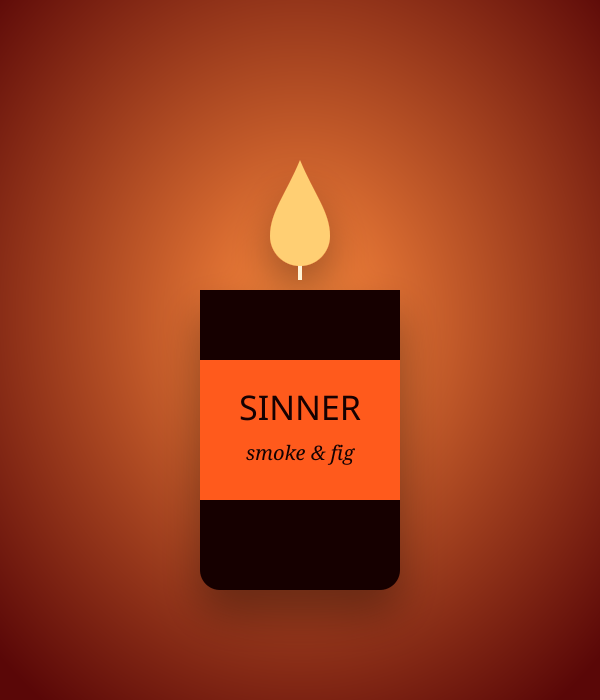

Chapter I · The crown
2022
Chapter I · The crown
2022
LORD
Swagger as survival. Cold, regal, bass-heavy — a self-coronation from a Peckham box room.
- Trap soul
- Dark R&B
- Juno-60

 New Album
New AlbumThe final chapter of the trilogy. 11 songs, 41 minutes.
 The Trinity Tour
The Trinity TourStarts 3 Oct at O2 Academy Brixton.
Presales, unreleased demos and the occasional 3am voice note, straight to your inbox.
Chapter IIIThe fall, finally. After the crown and the halo comes the confession nobody asked for — eleven songs about wanting the wrong things loudly. Recorded over nine nights in a deconsecrated chapel in Deptford, SINNER trades the choir loft for the back seat, pitching gospel harmony against blown-out 808s and red-light synths.
Every chapter is a different mask. Start with the crown, kneel at the halo, stay for the fall.
Chapter I · The crown
2022
Swagger as survival. Cold, regal, bass-heavy — a self-coronation from a Peckham box room.
 Chapter II · The halo
2024
Chapter II · The halo
2024
Devotion, whispered. Choir stacks, candle-warm keys and love songs that sound like prayers.
Chapter III · The fall
2026
The confession. Red-light synths and blown-out 808s under a choir that should know better.
“A masterpiece of beautiful wrongdoing — the rare trilogy closer that makes you start again.”
The Low End · ★★★★★
Three acts, one for each record, with a new live band and a 12-voice choir. Tickets are sold through each venue's official partner.
Signed vinyl, heavyweight cotton and a candle that smells like the chapel sessions. The store opens soon — the Congregation hears first.

Signed180g red vinyl, gatefold, signed insert. Limited to 2,000.
 Bestseller
BestsellerEmber orange, 450gsm brushed fleece, L,S,S embroidered chest.
 New
NewHeavyweight organic cotton. Crown-and-halo print front, tour dates back.

NewSoy wax, 50-hour burn. Smells like the chapel sessions.
Four years, three records, one body. The final chapter is here — and it's the loudest confession yet.
Read storyFrom Brixton to Lagos to Roskilde — the biggest run of shows yet, with a new live band and a 12-voice choir.
Read storyA burning set, a single camera and 14 attempts. Director Tolu Adeyemi on how they pulled it off.
Read story
Four years after LORD first crowned itself from a Peckham box room, the trilogy is finished. SINNER is out everywhere today via FireSprite Ent — eleven songs, forty-one minutes, and one very long night in a deconsecrated chapel.
“Every record has been a different mask,” says Lord,Saint,Sinner. “LORD was the one I wore to survive. SAINT was the one I wore to be loved. SINNER is what's underneath both of them. It's the least flattering thing I've made and the most honest.”
The album features Nia Okafor on “Burn Slow” and the Peckham Mass Choir across four songs, with production from long-time collaborator Theo Mensah and mixing by Ines Carvalho.
Signed blood-red vinyl, the Trilogy box set and the SINNER candle are available now in the shop. The Trinity Tour begins at O2 Academy Brixton on 3 October.
— Lord,Saint,Sinner newsroom
Tour · 2 Sept 2026The Trinity Tour starts in London on 3 October and runs through Europe, North America and Africa before festival season in 2027.
Each show is built in three acts — one for each record — with a new live band, a 12-voice choir and a stage designed by Studio Ashgrove. “You'll walk in to the crown and walk out after the fall,” says creative director Tolu Adeyemi.
The second Brixton date was added after the first sold out in eleven minutes. Congregation members get presale access 48 hours before general sale — join the mailing list to be first in line.
VIP packages, including soundcheck access and a signed setlist, are available on every date while stocks last.
— Lord,Saint,Sinner newsroom
Studio · 18 Aug 2026The “Fever Psalm” video was shot in a single, unbroken take — and it took fourteen attempts to get it.
“We only had enough flame bars for about twenty runs,” laughs director Tolu Adeyemi. “On take nine a pew caught for real. Take fourteen is the one you see, and you can hear the crew cheering in the last second if you listen for it.”
The set was built inside the same Deptford chapel where the album was recorded. Every candle in the frame was lit by hand between takes.
Watch the full video on the Videos page, alongside part one of the Behind the Veil documentary series.
— Lord,Saint,Sinner newsroom
Press · 14 Sept 2026
The first reviews of SINNER are in, and the congregation is growing.
The Low End gave the album five stars, calling it “a masterpiece of beautiful wrongdoing — the rare trilogy closer that makes you want to start again from the top.” Southbound praised “the most ambitious British R&B record in years,” while Night Service Weekly named “Devil in the Choir” Track of the Week.
“I don't read reviews,” says Lord,Saint,Sinner. “My mum does, and she reads them to me down the phone. So thank you, I guess, from both of us.”
— Lord,Saint,Sinner newsroom
Studio · 30 Jul 2026
The Peckham Mass Choir is where it all began — Lord,Saint,Sinner sang with them every Sunday from the age of seven.
“Asking them to sing on SAINT made sense. Asking them to sing on a song called ‘Devil in the Choir’ was a harder conversation,” they admit. “Auntie Grace read the lyrics twice, put her glasses down and said, ‘Well, he's got to be somewhere.’”
The choir recorded their parts in two nights, gathered around a single ribbon mic in the centre of the chapel. Four of their performances made the final record.
— Lord,Saint,Sinner newsroom
News · 8 Jul 2026“Forbidden” is the third single from SINNER and the most upbeat thing in the trilogy — a 108 bpm confession you can dance to.
“It's about the moment you know exactly what the right choice is and you're already reaching for the other one,” says Lord,Saint,Sinner.
The official visualiser, made with artist Mara Quist, is out now on YouTube and on the Videos page.
— Lord,Saint,Sinner newsroom
Press · 22 Jul 2025
SAINT has been named on the 2025 Southbank Sound Prize shortlist, alongside eleven of the year's best British and Irish albums.
“I wrote this record in a bedroom with the curtains shut,” says Lord,Saint,Sinner. “The idea that it's now in the same sentence as some of my heroes is mad to me.”
A live performance of “Candlelight” at the awards ceremony was later released as a single.
— Lord,Saint,Sinner newsroom